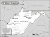

West Virginia

Attention: If you use this or any of the AIRS lists in any state, please report any bad phone numbers or emails to the webmaster. This is the responsibility of all users, including you. Thank you!
John Anderson
(jander14@wvu.edu)
CROSSROADS: I68 & I79
morgantown, 26508
CALL ONLY IN EMERGENCY PHONE: (304)291-3357
BUSES: assorted
AVAILABLE: any day after 5
familiar with: fuel injection
I CAN PROVIDE THE FOLLOWING SERVICES:
INTERNET ACCESS
TOOLS
TELEPHONE ACCESS
SPARE ROOM
MECHANICAL HELP
SPACE TO WORK ON BUS
PARTS AVAILABLE
COFFEE/TALK
TRANSPORTATION HELP
CAMPING SPOT: 2 nights
Favorite beer type: Anything cold
Jeff Kidwiler
(kidwiler@wirefire.com)
CROSSROADS: US 50 & I-77
Vienna, 26105
PHONE: (304) 295-0584
VW'S: 1970 Westy
AVAILABLE: try anytime
familiar with: 25hp, 36hp, 1600
I CAN PROVIDE THE FOLLOWING SERVICES:
INTERNET ACCESS
TOOLS
TELEPHONE ACCESS
MECHANICAL HELP
SPACE TO WORK ON BUS
Favorite beer type: Anything cold
Greg Burke
(mbjeeper@aol.com)
CROSSROADS: I-70 and I-470 (Wheeling)
Moundsville, 26041
ONLY CALL IF EMERGENCY PHONE: 304-845-5384
VW'S: Various bugs, 78 Westy, 63 Doublecab
AVAILABLE: Crazy shifts. Keep trying
familiar with: 1300, 1500, 1600
I CAN PROVIDE THE FOLLOWING SERVICES:
INTERNET ACCESS
TOOLS
TELEPHONE ACCESS
TRANSPORTATION HELP
MECHANICAL HELP
SPACE TO WORK ON BUS
STORAGE SPACE
PARTS AVAILABLE
CAMPING SPOT: 2 nights
Favorite beer type: Anything cold
VW Hillbillies
EMAIL: comics4god_at_hotmail,com (better to call_dot__dot__dot_ rarely check e
unless at work)
CROSSROADS: ROUTE 81 EXIT 13 in WV, 15 miles from ROUTE 70 Hagerstown MD and
ROUTE 50 in Winchester VA
CITY: Martinsburg, 25401
PHONE: 3042642783
VW'S: 1975 Campermobile
COMMENTS: Hey! What an adventure. Would love to meet or help you. VW
enthusiast raised by VW lovers. Dad let me drive his black hardtop beetle since
I was three and I learned to drive mom's orange '72 convertible bug. Owned '81
Rabbit, '87 Golf, and '92 Golf but I would never buy one of those new-fangled
VW's that they make today (shudder). On busses, I've replaced rear-window,
clutch cable and basics but am willing to follow any manual to get something to
work. Also like to figure out motorcycles. Got some tools and if need be,
there is a sears and walmart closeby. Prefer sweet wine.
AVAILABLE: call and leave a message... work odd hours and am usually busy
creating art so hands are often covered with paint, grease, dirt or construction
debris
I CAN PROVIDE THE FOLLOWING SERVICES:
INTERNET ACCESS
TELEPHONE ACCESS
TRANSPORTATION HELP
SPACE TO WORK ON BUS
STORAGE SPACE
COFFEE/TALK
CAMPING: 4 nights or more
SPARE ROOM: MOVE IN!!! :)
Favorite beer type: Thick and chewy
Carl Comte
(comtec@att.net)
CROSSROADS: I-81 and I-70
Martinsburg, 25401
PHONE: 304-264-2755
VW'S: One each 1970 Westfalia, and several beetles over the years
AVAILABLE: Yeah, Whenever
familiar with: 1600, dual carbs
I CAN PROVIDE THE FOLLOWING SERVICES:
INTERNET ACCESS
TOOLS
TELEPHONE ACCESS
TRANSPORTATION HELP
MECHANICAL HELP
SPACE TO WORK ON BUS
STORAGE SPACE
PARTS AVAILABLE
COFFEE/TALK
SPARE ROOM: MOVE IN!!! :)
Favorite beer type: Anything cold
Ray
EMAIL: nemobuscaptain@yahoo.com
CROSSROADS: Rt 60 and I64 (Exit 15)
Huntington, 25705
ONLY CALL IF EMERGENCY PHONE: 304-617-0442. and
days 304/525-7840. Pager 304/540-1590.
VW'S: 84 Vanagon-previously beetles and aircooled loafs, 74 Westy.
COMMENTS: I'm not real mechanical, but I can pick you up and ferry you to parts places and
such. AVAILABLE: Evenings and Weekends.
I am familiar with: 1600, type4 engine
I CAN PROVIDE THE FOLLOWING SERVICES:
INTERNET ACCESS
TOOLS
TELEPHONE ACCESS
TRANSPORTATION HELP
MECHANICAL HELP
SPACE TO WORK ON BUS
Favorite beer type: I don't drink
Glen Ward
EMAIL: glenward22_at_aol_dot_com
CROSSROADS: I79 and Route 50
Clarksburg, 26330 PHONE: 304-365-0585
VW'S: 1970 Westfalia Corvair Powered
AVAILABLE: Whenever
I am familiar with: 1200, 1300, 1500, 1600
I CAN PROVIDE THE FOLLOWING SERVICES:
TOOLS
TRANSPORTATION HELP
MECHANICAL HELP
SPACE TO WORK ON BUS
STORAGE SPACE
SOME PARTS
CAMPING: none
SPARE ROOM: none
Favorite beer type: I don't drink
Jamie Auch
jamie@kookymathteacher.com
CROSSROADS: 81/70/270
CITY: Harpers Ferry
VW'S: '60 DD Panel, '71 Hightop
AVAILABLE: Mon-Fri after 6:00 PM, Weekends
I am familiar with: 1500, 1600, 1776+, dual carbs
I CAN PROVIDE THE FOLLOWING SERVICES:
INTERNET ACCESS
TOOLS
TELEPHONE ACCESS
TRANSPORTATION HELP
MECHANICAL HELP
SPACE TO WORK ON BUS
SOME PARTS
COFFEE/TALK
CAMPING: 4 nights or more
SPARE ROOM: none
Favorite beer type: Anything cold
Kimbo
EMAIL: vdubyabus@yahoo.com
CROSSROADS: I-77 / Rt. 460
CITY: Athens, 24712 PHONE: 304-920-7791
VW'S: 72 Westy
AVAILABLE: evenings/weekends
I CAN PROVIDE THE FOLLOWING SERVICES
INTERNET ACCESS
TOOLS
TELEPHONE ACCESS
SPACE TO WORK ON BUS
COFFEE/TALK
CAMPING: 2 nights
Favorite beer type: Thick and chewy
Mark
EMAIL: cyruswv_at_aol_dot_com
CROSSROADS: I-64 and US 52
CITY: Kenova, 25330
ONLY CALL IF EMERGENCY PHONE: 304-638-0942
VW'S: 1987 Vanagon, 1991 Jetta
COMMENTS: Lots of prior experience with air-cooled VWs especially upright fan models (type
1 and 2). Not a mechanic but can assist and or direct to local, trustworthy VW experts.
AVAILABLE: try anytime
I am familiar with: Bastard40hp, 1200, 1300, 1500, 1600, fuel injection
I CAN PROVIDE THE FOLLOWING SERVICES
TOOLS
TELEPHONE ACCESS
TRANSPORTATION HELP
Favorite beer type: Rare brands
woody
EMAIL: thewoodies@comcast.net
CROSSROADS: I-77& US 460
CITY: bluefield
ONLY CALL IF EMERGENCY PHONE: 304-325-3151
VW'S: 1964 Custom
AVAILABLE: 8AM-11Pm /7
I am familiar with: 1600
I CAN PROVIDE THE FOLLOWING SERVICES
INTERNET ACCESS
TOOLS
TELEPHONE ACCESS
TRANSPORTATION HELP
CAMPING: none
SPARE ROOM: none
Favorite beer type: Commercial brands
Sean Whitcomb
EMAIL: swhitcomb_at_direcway_dot_com
CROSSROADS: 9 and 340
CITY: Harpers Ferry, 25425 PHONE: 304-724-7992
VW'S: 74 Karmann Ghia
I am familiar with: 1300, 1500, 1600
I CAN PROVIDE THE FOLLOWING SERVICES
INTERNET ACCESS
TOOLS
TELEPHONE ACCESS
TRANSPORTATION HELP
MECHANICAL HELP
SPACE TO WORK ON BUS
SOME PARTS
COFFEE/TALK
CAMPING: none
SPARE ROOM: none
Favorite beer type: I don't drink
Karl & Kristina Bloss
EMAIL: kbloss_at_charter_dot_net
CROSSROADS: I-64, I-79
CITY: Hurricane, 25526 PHONE: 304-760-2115
VW'S: '85 Westy, '93 Eurovan
COMMENTS: I can't help much with air-cooled other than general knowledge,
although I do have a Muir book. I do know wasserboxers and have a Darrell
Boehler ECU tool that can help trouble shoot. I keep some parts on hand
and have metric tools.
AVAILABLE: Evenings & Weekends only. Try to keep calls before 11PM.
I am familiar with: type4 engine, wasserboxer
I CAN PROVIDE THE FOLLOWING SERVICES:
INTERNET ACCESS
TOOLS
TELEPHONE ACCESS
TRANSPORTATION HELP
MECHANICAL HELP
SPACE TO WORK ON BUS
SOME PARTS
COFFEE/TALK
CAMPING: 2 nights
SPARE ROOM: none
Favorite beer type: Micro brands
kevnic7
EMAIL: kevnic7_at_yahoo_dot_com
CROSSROADS: I-79 and I-68
CITY: Morgantown, 26505
ONLY CALL IF EMERGENCY PHONE: 304-288-3057 Cell
VW'S: 66 Beetle
AVAILABLE: Evenings and weekends
I am familiar with: 1200, 1300, 1500, 1600
I CAN PROVIDE THE FOLLOWING SERVICES
INTERNET ACCESS
TOOLS
TELEPHONE ACCESS
TRANSPORTATION HELP
MECHANICAL HELP
SOME PARTS
CAMPING: none
SPARE ROOM: none
Favorite beer type: Non Alcoholic
BAREFOOTNELLIE
EMAIL: MRS_dot_COFFMAN_at_HOTMAIL_dot_COM
CROSSROADS: RT. 64 / RT. 34 / RT 35 - @ EXIT 39
CITY: TEAYS VALLEY, 25526
ONLY CALL IF EMERGENCY PHONE: 304-561-5313
VW'S: 1970 BUS - 2001 CABRIO
COMMENTS: 36 YRS. NATIVE AMERICAN WOMAN FROM CALIFORNIA - NOW LIVING IN WEST
VIRGINIA WITH HUSBAND SCOTT. WE BOTH WORK HARD AND PLAY HARD. LOVE BLUEGRASS,
FESTIVALS AND KIND FOLKS...
AVAILABLE: MONDAY - SUNDAY
I CAN PROVIDE THE FOLLOWING SERVICES
INTERNET ACCESS
TELEPHONE ACCESS
TRANSPORTATION HELP
SPACE TO WORK ON BUS
STORAGE SPACE
CAMPING: 3 nights
SPARE ROOM: none
Favorite beer type: Beer is for wimps!
Tom
EMAIL: try1897_at_wmconnect_dot_com
CROSSROADS: I-81 and I-70
CITY: Martinsburg, 25401 PHONE: 3304 - 270-7670
VW'S: 82 Westy
COMMENTS: This is the first VW aircooled I've owned in 35 years. Back then it
was mostly Beatles
AVAILABLE: Call most any time
I CAN PROVIDE THE FOLLOWING SERVICES
INTERNET ACCESS
TOOLS
TELEPHONE ACCESS
TRANSPORTATION HELP
MECHANICAL HELP
SPACE TO WORK ON BUS
COFFEE/TALK
CAMPING: none
SPARE ROOM: none
Richard
EMAIL: onlyrickc_at_aol_dot_com
CITY: Charleston, 25302
VW'S: 72 Super Beetle
I am familiar with: 1200/1300, 1500/1600
I CAN PROVIDE THE FOLLOWING SERVICES
CAMPING: none
SPARE ROOM: none
Favorite beer type: I don't drink
Dave
EMAIL: youslayme_at_gmail_dot_com
CROSSROADS: I-81
CITY: Hedgesville, 25427 PHONE: 540-931-1044
VW'S: 1969 Westy
COMMENTS: I don't really know what I'm doin' when it comes to mechanical stuff,
but I sure as hell can give ya a ride to a parts store or help ya get
somewhere locally.
AVAILABLE: Whenever, If I don't answer right away leave a message.
I am familiar with: 1500/1600
I CAN PROVIDE THE FOLLOWING SERVICES
INTERNET ACCESS
TOOLS
TELEPHONE ACCESS
TRANSPORTATION HELP
SPACE TO WORK ON BUS
COFFEE/TALK
CAMPING: 4 nights or more SPARE ROOM: none
Favorite beer type: Thick and chewy
Capt. Stan
EMAIL: gypsypoet1968_at_yahoo_dot_com
CROSSROADS: Hwy 61
CITY: Smithers, 25186
PHONE: 304-561-7506(also)304-380-3642
VW'S: 1978 Transporter CamoBus
COMMENTS: I am not much of a mechanic, but always willing to help. Have a good
mechanic here in town. I am in charge of beer aquisition. The street out here is
cool and we can at least work on it off the main highway...if the shop isn't
open. The apartment here has a decent wireless connection. We will be
unavailable after mid-May at this location as we are hitting the road ourselves
at that time.We will be heading South toward Key West, our former and future
home. We hope to meet (but not need, haha, knock on wood) several of you on the
way. We are new to the Community.
AVAILABLE: Most of the time.
I CAN PROVIDE THE FOLLOWING SERVICES
TOOLS
TELEPHONE ACCESS
TRANSPORTATION HELP
MECHANICAL HELP
STORAGE SPACE
SOME PARTS/CAN GET THEM
COFFEE/TALK
CAMPING: none SPARE ROOM: none
Favorite beer type: Micro brands
John W.Morris
EMAIL: jwmorris_at_hughes_dot_net
CROSSROADS: I-77
CITY: Sandyville, 25275
PHONE: 304-273-2579
VW'S: 73 Thing
COMMENTS: I am down to one VW from several, I know a little and may be able to
help
AVAILABLE: Mon-Fri after 5 pm, Most weekends.
I am familiar with: 36hp, 1500, 1600, type4 engine
I CAN PROVIDE THE FOLLOWING SERVICES:
INTERNET ACCESS
TOOLS
TELEPHONE ACCESS
MECHANICAL HELP
SPACE TO WORK ON BUS
CAMPING: 1 night SPARE ROOM: none
Favorite beer type: Anything cold
Aaron Lennox
EMAIL: raqintheory_at_hotmail_dot_com
CROSSROADS: 480 & 45
CITY: Shepherdstown ZIP CODE: 25443
PHONE: 304 596-1736
VW'S: '73 'Adventurewagen' Bus
COMMENTS: Not much I can offer in the way of space to crash/camp, and tools are
somewhat limited. Will do what I can when I can to help with anything
else. Would love to hear from anyone coming through the area.
AVAILABLE: Depends
I am familiar with: type4 engine
I CAN PROVIDE THE FOLLOWING SERVICES
INTERNET ACCESS
TELEPHONE ACCESS
TRANSPORTATION HELP
MECHANICAL HELP
SOME PARTS/CAN GET THEM
COFFEE/TALK
CAMPING: none SPARE ROOM: none
Favorite beer type: Anything cold
{kind=link}